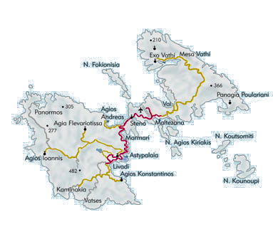

Astypalaia: The butterfly of the Aegean

Astypalaia lies in the western corner of the Dodecanese, at the Aegean sea. It is often called as the "butterfly of the Aegean" because of its butterfly-shaped coastline.
The ancient greeks called it the "Bank of the Gods" because of the abundance of flowers, fruit and hunting game that existed on the island. Astypalea is surrounded by many small islands, while it is composed of two parts joined by a narrow strip of land.